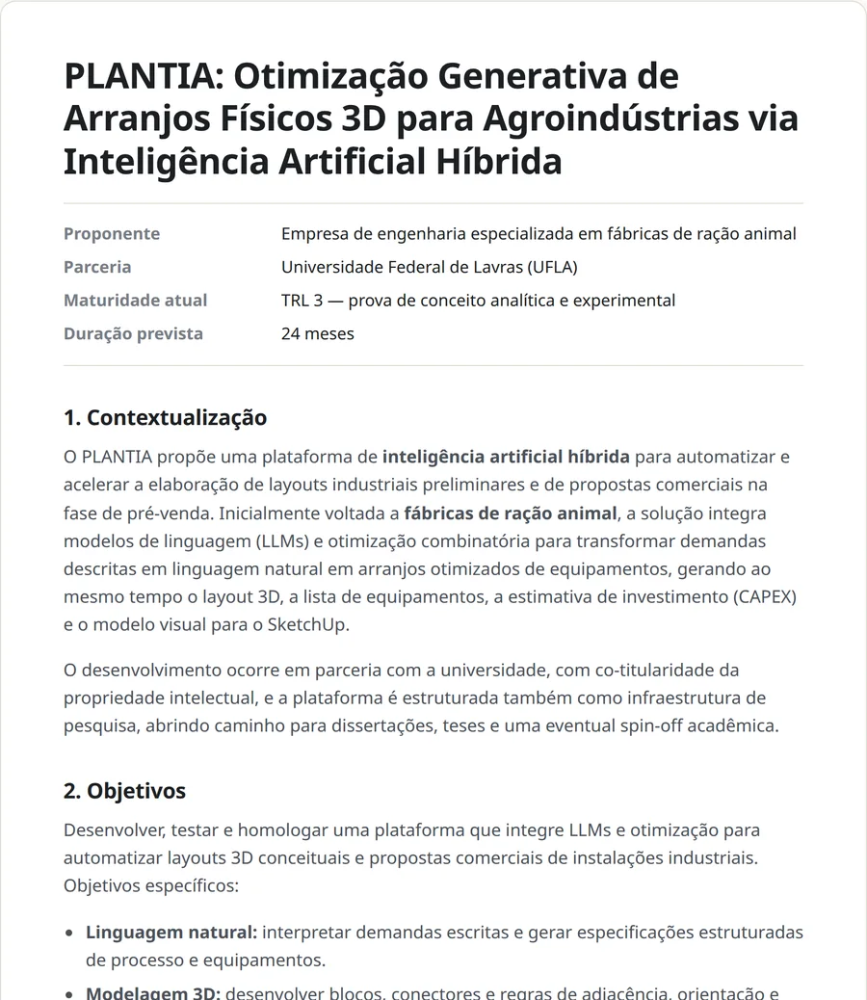

“Às vezes, algumas horas com a pessoa certa podem evitar semanas de desenvolvimento na direção errada.”
O apoio do Raphael foi importante em um momento em que precisávamos tomar decisões técnicas sobre hardware, sensores e protocolos de comunicação para um projeto de Indústria 4.0.
Nossa equipe dominava o desenvolvimento de software, mas tínhamos dúvidas importantes sobre qual arquitetura e padrão de comunicação seriam mais adequados. A experiência do Raphael nos ajudou a avaliar as alternativas e tomar uma decisão com muito mais segurança.
Ler o depoimento completo
A partir dessa definição, conseguimos estruturar uma solução mais aberta, escalável e com menor dependência de fornecedor, além de ter muito mais clareza para estimar os custos, o esforço de desenvolvimento e a margem do projeto.
Mais do que indicar uma tecnologia, a consultoria nos ajudou a reduzir a incerteza e transformar uma decisão técnica em uma decisão de negócio.
Sua ideia funcionando
em semanas, não em meses.
Construo provas de conceito e protótipos para startups e empresas que precisam tirar uma ideia do papel com rapidez — seja para validar uma hipótese, testar com usuários reais ou apresentar algo concreto a investidores e editais de fomento. Você recebe um sistema funcionando, com código, documentação e uma visão clara do que foi provado.
Feito para startups que precisam provar a ideia
Uma prova de conceito responde a uma pergunta só: isso funciona? É o passo mais barato para descobrir — antes de contratar um time, gastar o investimento ou prometer o que ainda não foi testado.
Fundadores sem time técnico
Você conhece o problema e o mercado, mas ainda não tem quem construa. Faço o papel técnico nessa fase: transformo a ideia em algo que funciona e deixo tudo pronto para o time que vier depois.
Startups indo atrás de investimento
Algo que funciona de verdade para mostrar em pitch, banca ou rodada — no lugar de slides e promessas.
Startups que vão disputar editais
Protótipo e parte técnica da proposta para programas de fomento à inovação, mostrando a maturidade tecnológica que o edital pede.
Também atendo empresas que querem testar uma ideia nova antes de investir num projeto grande.
Quem já trabalhou comigo
“…transformar uma necessidade ainda pouco definida em uma solução concreta que pudesse ser testada e avaliada.”
Durante meu pós-doutorado na UFLA, trabalhei na avaliação de tecnologias que poderiam ser aplicadas a demandas relacionadas ao trabalho de perícia da Polícia Civil. Em determinado momento, percebi que, além da pesquisa e da avaliação conceitual das tecnologias, seria importante construir provas de conceito para verificar na prática como essas soluções poderiam funcionar.
Foi nesse contexto que contei com o apoio do Raphael. Ele me ajudou a transformar as ideias e requisitos que tínhamos em duas provas de conceito funcionais, participando da definição das tecnologias, da arquitetura das soluções e da integração dos diferentes componentes envolvidos.
Ler o depoimento completo
O trabalho foi importante porque nos permitiu sair de uma avaliação predominantemente teórica e experimentar as soluções na prática. Com os protótipos, conseguimos entender melhor as possibilidades, identificar limitações e avaliar com mais segurança a viabilidade das tecnologias para o contexto em que seriam utilizadas.
A contribuição do Raphael foi especialmente importante por conseguir transitar entre diferentes áreas de tecnologia e transformar uma necessidade ainda pouco definida em uma solução concreta que pudesse ser testada e avaliada.
Escopo fechado, entregas curtas, sem surpresa
Você sabe desde o início o que será entregue, em quanto tempo e o que fica de fora.
Conversa inicial
Uma conversa técnica inicial, de 1 a 2 horas e sem custo, para entender a ideia e ver se uma POC é mesmo o próximo passo certo.
Escopo por escrito
A hipótese a provar, o que entra, o que não entra, prazo e valor — tudo num documento curto.
Ciclos com demonstração
A cada ciclo você vê algo funcionando e pode corrigir o rumo cedo, não só no final.
Entrega
Código-fonte, documentação, instruções para rodar e uma apresentação dos resultados.
Três formatos, conforme a pergunta que você precisa responder
Na escala de maturidade tecnológica (TRL) usada por editais e investidores, prova de conceito e protótipo são etapas distintas — trabalho nas duas. Os prazos são de referência; o escopo exato é fechado na conversa inicial.
Comece por uma conversa técnica de 1 a 2 horas
Sem compromisso e sem custo: você apresenta a ideia ou a dúvida técnica, e eu dou uma opinião franca sobre viabilidade, riscos, tecnologias e o melhor próximo passo — que pode ser um dos pacotes abaixo ou nenhum deles.
Diagnóstico técnico
Isso é viável? Qual o caminho e onde estão os riscos?
- Análise de viabilidade técnica
- Riscos e pontos críticos
- Arquitetura e tecnologias sugeridas
- Estimativa para POC ou protótipo
Prova de conceito
O mecanismo central da ideia funciona de verdade?
- Implementação do núcleo da solução
- Demonstração funcional
- Testes com dados reais ou realistas
- Relatório: o que foi provado e o que não foi
- Enquadramento no nível de maturidade (TRL)
- Código-fonte e instruções
Protótipo para captação
Algo apresentável para investidores, bancas e usuários de teste.
- Protótipo navegável e publicado
- Interface pensada para demonstração
- Documento de maturidade tecnológica (TRL)
- Caminho técnico até o produto
- Apoio na parte técnica de editais
Por atuar em dedicação parcial, trabalho com poucos projetos ao mesmo tempo e com escopo fechado. Manutenção e operação contínua não estão incluídas: a entrega é preparada para que seu time — ou outra equipe — dê continuidade.
Veja como fica o resultado de um projeto
Um exemplo real, aqui em versão resumida: a prova de conceito do PLANTIA virou um documento técnico pronto para disputar um edital de fomento — com o problema, a solução, as evidências do que já funciona, a comparação com o mercado e o cronograma. É o tipo de material que você recebe no pacote de protótipo para captação.
- Problema e objetivos explicados para quem vai avaliar
- Evidências da prova de conceito, com imagens do sistema funcionando
- O que ainda falta construir, sem esconder os limites
- Mercado, inovação e cronograma

Você foca no negócio; eu cuido da tecnologia
Tenho experiência multidisciplinar e escolho as ferramentas certas para cada ideia. Alguns tipos de produto que já construí:
Produtos com inteligência artificial
Assistentes, automações e ferramentas que usam IA de forma confiável, com o resultado sempre conferido.
Plataformas e aplicativos web
O fluxo principal do produto funcionando, do cadastro ao painel do usuário, para testar com clientes reais.
Dados e painéis
Juntar dados espalhados e transformá-los em indicadores e painéis que ajudam a decidir.
Mapas e localização
Produtos que dependem de onde as coisas estão: áreas, rotas, ocorrências e monitoramento.
Dispositivos e sensores
Protótipos com hardware próprio para medir, monitorar e automatizar.
Educação e treinamento
Plataformas de ensino com caminhos personalizados e correção automática.
Rigor de pesquisa, prática de mercado
Velocidade sem perder o controle
Uso ferramentas de IA para acelerar o desenvolvimento, sempre com revisão, testes e arquitetura pensada — o código entregue é seu e é compreensível.
Honestidade sobre limites
Uma POC deixa claro o que foi provado e o que ainda não foi. Isso vale mais para um investidor do que uma demonstração que esconde as lacunas.
Documentação que serve para captar
Participei da escrita da parte técnica de muitos projetos de pesquisa e inovação submetidos a agências de fomento — sei como apresentar o que foi construído e provado.
Experiência de ponta a ponta
Da concepção à implantação: plataformas usadas por milhares de pessoas e projetos com grandes empresas e órgãos públicos.

- Professor TitularDepartamento de Computação Aplicada da Universidade Federal de Lavras (UFLA)
- Doutorado em Engenharia e Gestão do ConhecimentoUniversidade Federal de Santa Catarina (UFSC)
- Mestrado em Engenharia de ProduçãoUniversidade Federal de Santa Catarina (UFSC)
- Graduação em Ciência da ComputaçãoUniversidade Regional de Blumenau (FURB)
Raphael Winckler de Bettio
Programo desde a adolescência. Antes da universidade, passei mais de uma década no mercado: desenvolvedor de ERP, pesquisador em ensino a distância, sócio-fundador de uma startup premiada de portais corporativos, líder técnico em projeto para o governo federal e consultor em sistemas críticos em São Paulo.
Há 15 anos leciono na UFLA, sempre em disciplinas voltadas à programação — algoritmos, estruturas de dados, programação para web e para dispositivos móveis, sistemas distribuídos. Na universidade, também concebi e implementei plataformas usadas por milhares de pessoas, liderei tecnicamente grandes projetos de inovação em parceria com empresas e governo, e registrei softwares no INPI em áreas como robótica educacional, casas inteligentes e acessibilidade.
Sempre vi a computação como ferramenta para resolver problemas reais. Agora dedico parte do meu tempo a ajudar quem tem uma boa ideia a descobrir, rápido e com segurança, se ela funciona.
Antes de conversarmos
Não tenho time técnico. O que acontece depois da POC?
Você recebe o código, a documentação e uma explicação clara de como continuar. Posso ajudar a definir o perfil do primeiro desenvolvedor ou avaliar uma equipe contratada para a próxima fase — para que você não dependa de mim.
Você ajuda com editais de fomento?
Sim. No pacote de protótipo para captação, preparo a parte técnica da proposta: contextualização, viabilidade com as evidências da POC, maturidade tecnológica e cronograma. Veja um exemplo de documento técnico para edital, em versão resumida.
Quem fica com o código e a propriedade intelectual?
Você. O código desenvolvido para o projeto é entregue a você, e isso fica definido em contrato. Ferramentas genéricas que eu já tinha antes do projeto podem ser usadas como base, sem limitar o seu uso.
Quanto custa a primeira conversa?
A conversa técnica inicial, de 1 a 2 horas, não tem custo nem compromisso. Se fizer sentido seguir, o escopo e o valor do pacote são definidos depois, por escrito.
Minha ideia fica em sigilo?
Sim. Assino acordo de confidencialidade (NDA) sem problema, antes mesmo de você detalhar a ideia.
Qual a diferença entre POC, protótipo e MVP?
A POC prova que o mecanismo central funciona. O protótipo mostra como a solução seria usada e serve para apresentar. O MVP é um produto mínimo em operação com clientes reais — normalmente o passo seguinte, feito pelo seu time ou por uma equipe contratada a partir da base entregue.
Por que dedicação parcial?
Sou professor em regime de dedicação exclusiva, e a Lei de Inovação permite atuar em consultoria por algumas horas semanais. Por isso trabalho com escopo fechado e poucos projetos ao mesmo tempo — o que também mantém o foco em cada um.
Atende remotamente?
Sim. Todo o trabalho pode ser feito à distância, para clientes em qualquer lugar do Brasil ou do exterior, com reuniões online nas demonstrações.
E se a POC mostrar que a ideia não funciona?
Isso também é um resultado — e costuma ser o mais barato que você vai conseguir. O relatório mostra o motivo e, quando existem, os caminhos alternativos.
Vamos conversar sobre a sua ideia?
Me conte em poucas linhas o que você quer testar. Respondo pessoalmente.